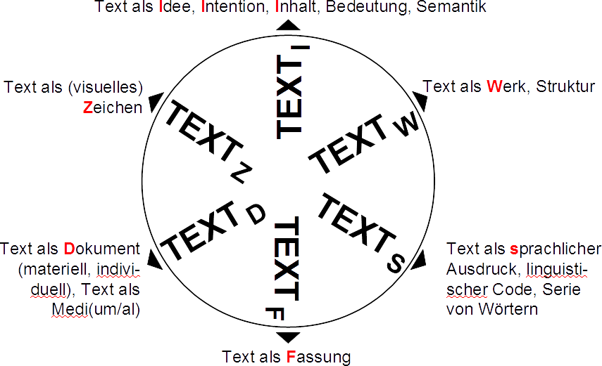

Texte edieren
Edition ist die erschließende Wiedergabe historischer Dokumente
Sahle, erstmals 2000; Vom editorischen Fachwissen, 2002
https://www.i-d-e.de/themen/editorik/
- „erschließende“ – Erschließung ist der allgemeine Begriff für die historisch-kritische Auseinandersetzung mit den zu edierenden Texten bzw. Dokumenten. Ein spezieller Teilbereich der Erschließung ist z.B. die philologische Textkritik.
- „Wiedergabe“ – Die Edition zielt auf die Repräsentation bereits existierender Texte bzw. Dokumente.
- „historischer“ – Die Edition beschäftigt sich mit Texten bzw. Dokumenten, zu denen eine historische Distanz besteht. Diese Distanz ist konstitutiv für die Anwendung erschließender Kritik. Ihre Überwindung ist das Ziel der Edition.
- „Dokumente“ – Das „Dokument“ ist ein verallgemeinernder Begriff für Texte in einem abstrakten oder materiell-konkreten Sinne. Der allgemeinere Dokumentbegriff verweist darauf, dass die verschiedenen editorischen Schulen und ihre theoretischen Grundannahmen in einem pluralistischen Textbegriff methodisch zusammengeführt werden können.
Das Sahle'sche Textrad
Texte digital edieren
Eine digitale Edition ist dadurch bestimmt, dass sie nicht ohne wesentliche Informations- und Funktionsverlusteverluste in eine typographische Form gebracht werden kann.
Sahle, Digitale Editionsformen, Bd. 2, S. 149
Arbeitsschritte
- Transkribieren
- Markup einbringen
- Annotieren / Kommentieren
- Verknüpfungen herstellen
Editionsarten
- dokumentarische Edition
- Edition als "knowledge site"
Funktionalitäten (intern)
- Anordnung von Inhalten → Netzwerke der Nonnen
- Umschaltung von Sichten → Herpin
- Visualisierungen → GeoBrowser Tagebücher Christian II.
Funktionalitäten (extern)
- Überprüfbarkeit
- Datenaustausch
Markup einbringen: Die Technik: XML (eXtensible Markup Language)
- Inhalt, Struktur und Aussehen trennen
- Semantik explizit machen
- editorisches Handeln dokumentieren
- Standardisierung nach der Text Encoding Initiative, www.tei-c.org
Ein XML-Beispiel
<element attribut="attributwert">Elementinhalt</element>
Besonderheiten der Kodierung
- Textfluss mehrdeutig (
<choice>) - 'Sinn' ergibt sich erst aus dem Zusammenspiel mit Verarbeitungsanweisungen
- statische vs. dynamische Edition → Apparat-Kodierung vs. Apparat-Generierung
Erschließung
Um Texte semantisch nutzbar zu machen, sollten (mindestens) Referenzen auf (=Erwähnung von) Entitäten ausgezeichnet und möglichst mit Normdaten verknüpft werden.
Normdatenarten
- kontrollierte Vokabulare → z.B. Gemeinsame Normdatei (GND)
- für alle Entitäten
- neue Entitäten: Handschriften, Werke
Digitale Objekte als 'selbständige' Objekte
- Semantic Web → Linked Open Data (LOD)
Digital Autonomuous Cultural Object
(DACO) → Thaller
Veränderungen
- abstrahierende Arbeitsweise
- Mashup → Anschlussfähigkeit durch Normdaten (z.B. Beacon)
- Projektplanung → ID-Bildung, für Referenzierung
- Postmoderne Literaturtheorie
→ Leser als Autor der Edition vs. "gesichertes Wissen" - Zukunft des Annotierens → IIIF → Forschungsumgebung
How to read a million books
→ distant reading- Lizensierung → CC / OA vs. Open Content
Herausforderungen → Qualitätsmanagement
- Absprachen zwischen inhaltlichen Bearbeitern und technischen Betreuern
- inhaltliche Kontrolle → Schemata
- technische Kontrolle → kontrollierte Vokabulare
Was wird archiviert, Langzeit-verfügbar gemacht?
- Bitstream, Aussehen, Funktionalität, Gesamtumgebung
- Edition = Software = Einheit von Inhalten, Strukturen, Oberflächen
- Formatvielfalt → "Single-Source-Prinzip"
Präsentation, Suche, Archiv, Datenaustausch
Entscheidungen
- Publikationsprozess
- Abgeschlossenheit → neue alte Publikationskultur
- Mikropublikation → IIIF, HSP
- Review-Kultur → inhaltliche und technische Begutachtung
Kritik der digitalen Vernunft
→ digitale Quellenkritik
<Ende/>